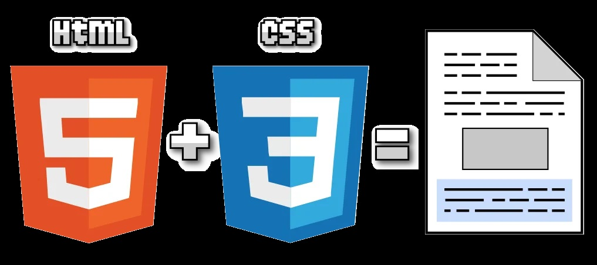

Declaración
Declaración
|
Declaración |
 Selector |
|---|---|
| Es el elemento que indica lo qué se debe hacer. Está compuesta por una propiedad que puede se color, tipo de fuente, tamaño, entre otros elementos. | Es la fase que indica a qué elementos se le aplica una declaración |
| Existen varios tipos de selectores, estos son los básicos | |
|---|---|
| Universal | Se usa para elegir todos los elementos de una página web. |
| Descendente | Escoge todos los elementos de un sitio cuya etiqueta HTML tiene un mismo valor. |
| De clase | Ayuda a que el selector sea más preciso, eligiendo a todos los elementos dentro de otros elementos. |
| De ID | Se emplea para seleccionar componentes de una página a los que se les haya dado un valor ID. |
Licenciatura en Sistemas Computacionales© Copyright 2024. Luis Felipe Gutierrez Lopez |